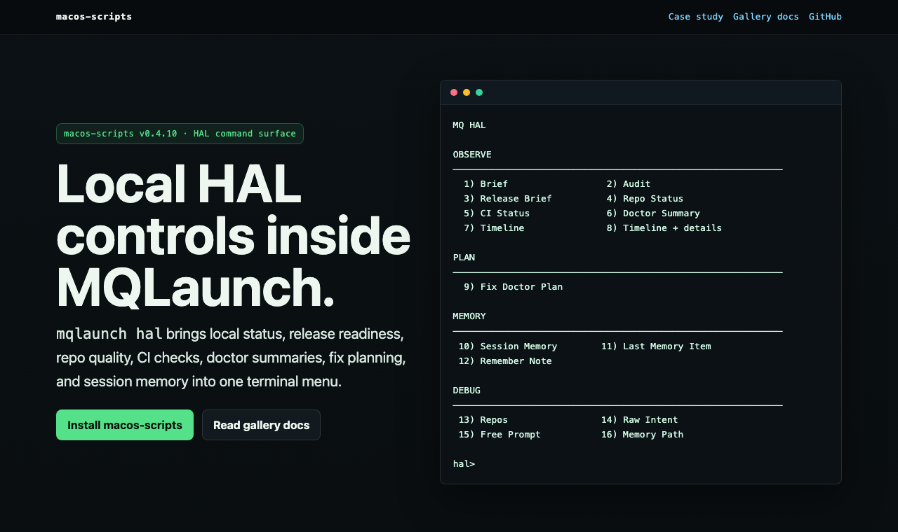

Status without risk
Brief, Audit, Release Brief, Repo Status, CI Status, Doctor Summary, and Timeline.
mqlaunch hal brings local status, release readiness, repo quality,
CI checks, doctor summaries, fix planning, and session memory into one terminal menu.
MQ HAL OBSERVE ──────────────────────────────────────────────────────────── 1) Brief 2) Audit 3) Release Brief 4) Repo Status 5) CI Status 6) Doctor Summary 7) Timeline 8) Timeline + details PLAN ──────────────────────────────────────────────────────────── 9) Fix Doctor Plan MEMORY ──────────────────────────────────────────────────────────── 10) Session Memory 11) Last Memory Item 12) Remember Note DEBUG ──────────────────────────────────────────────────────────── 13) Repos 14) Raw Intent 15) Free Prompt 16) Memory Path hal>
A rendered preview of the HAL command surface as it appears on the project page.

The HAL surface is grouped by intent: observe, plan, memory, and debug.
Brief, Audit, Release Brief, Repo Status, CI Status, Doctor Summary, and Timeline.
Fix Doctor Plan creates manual copy-paste recommendations. It does not execute repairs.
Session, Last, Remember Note, and Memory Path use local HAL memory.
Repos, Raw Intent, Free Prompt, and CD helper expose the HAL routing layer.
mqlaunch owns UX. mq-hal owns the logic. The bridge delegates only.
Smoke tests guard surface_* layout, command coverage, docs, and file formatting.
These commands stay local and favor observation before planning.
$ mqlaunch hal audit HAL Audit ========= Publish readiness, README quality, docs signals, and a safe recommendation. $ mqlaunch hal release-brief Release readiness without changing the repo.